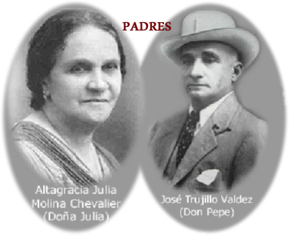
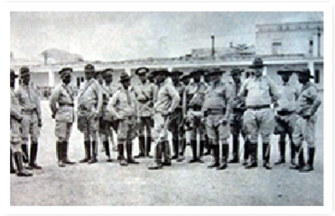
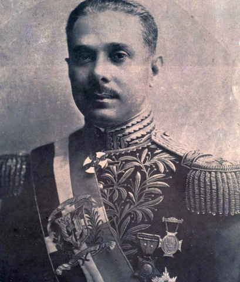
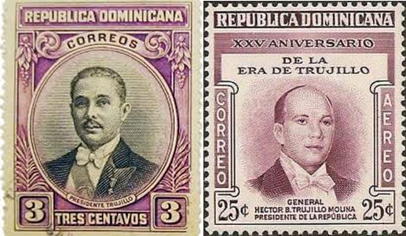
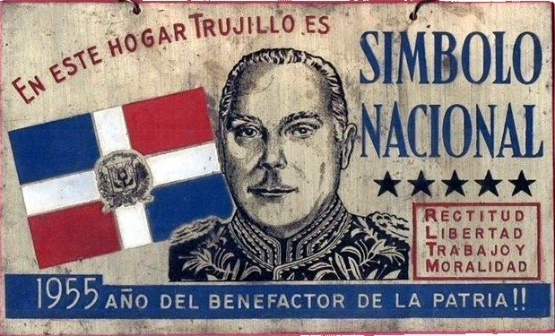

Origen

Rafael Leonidas Trujillo Molina nació en San Cristóbal el 24 de octubre de 1891. Fue el tercer hijo de un total de once.
Su padre era empleado público y su madre costurera. Durante su niñez y adolescencia, la familia vivió en la pobreza y en un entorno disfuncional: pues su padre era mujeriego y no atendía debidamente a la familia.
En su juventud, Trujillo trabajó como telegrafista en San Cristóbal y luego en Baní. Más adelante se empleó como «Guardia Campestre» en el ingenio azucarero San Luis y, para 1916, en Boca Chica. Tiempo después, solicitó permiso para inscribirse en la Academia Militar de Haina.
Academia Haina

Como estudiante en la Academia Militar de Haina, Trujillo resultó ser un cadete sobresaliente. Luego de graduarse pasó a formar parte de la recién formada Guardia Nacional Dominicana. Prestó servicios en San Pedro de Macorís, en la región este, combatiendo a los guerrilleros dominicanos contrarios a la invasión yanqui, conocidos como Los Gavilleros.
En 1924, las tropas de Estados Unidos empezaron a salir del país y Trujillo quedó como Teniente del Ejército. La Academia Militar de Haina le sirvió de trampolín para alcanzar las fuentes del poder.
Corrupción y riqueza

Se rodeó de personas incondicionales y, junto a ellos, en pocos años se convirtió en un hombre rico y poderoso usando chantajes, abuso de poder, extorsiones, cobro de sueldos de soldados inexistentes, negocios turbios dentro de los cuarteles y favores políticos, entre otros.
En 1929, la comisión liderada por Charles G. Dawes (exvicepresidente de EUA) destapó una profunda red de corrupción y malversación de fondos en el ejército que apuntaba directamente a la gestión de Rafael Leónidas Trujillo. Salvó su posición, gracias a la falta de visión y la confianza que el presidente Vásquez le tenía.
Poder y más riquezas

Desde el poder se mantuvo dominante en todo momento, utilizó el dinero y la estructura del Estado dominicano para enriquecerse, manipular, chantajear e intimidar a otros. No respetó nigún proceso democrático, la ética, ni la vida de muchos.
Logró desarticular toda oposición y los intentos para derrocarlo. Su participación como protagonista de la política dominicana se extendió por tres décadas, hasta 1961.
Personalidad

Su personalidad fue compleja: Amaba los caballos y el ganado vacuno. Era generoso y amable con sus familiares, mujeriego y galante con las damas, y prefería mujeres de piel clara. Tuvo nueve mujeres conocidas.
Aseado, elegante y ostentoso
Trujillo era sumamente meticuloso con su aspecto personal. Cuidaba con extrema rigurosidad su vestimenta, usaba trajes hechos a la medida o uniformes cargados de condecoraciones. También cuidaba los modales formales y la higiene en su entorno, exigiendo el mismo estándar a sus colaboradores más cercanos. De joven, su tío materno Plinio Piña Chevalier le orientó a vestir, a mostrarse limpio, perfumado y a comportarse en grupos sociales.
Megalómano y narcisista
Exigía y necesitaba de admiración absoluta y constante para él y sus familiares. Esto se manifestó en el monumental culto a la personalidad: renombró la capital del país como «Ciudad Trujillo», bautizó el pico más alto de las Antillas (Pico Duarte) con su propio nombre, levantó miles de estatuas en su honor y exigió que todas las instituciones públicas y privadas exhibieran lemas oficiales como «Dios y Trujillo». Se autoasignó los títulos de «Generalísimo» y «Benefactor». Las placas y fotos de Trujillo estaban presentes en casi todos los hogares del país.
Despiadado, cruel y vengativo
No mostraba clemencia ni empatía al momento de eliminar obstáculos políticos o neutralizar a cualquier opositor real o potencial. La violencia sistemática, el terror, las torturas y los crímenes de Estado (como el asesinato de las hermanas Mirabal, la Masacre del Perejil o el caso Galíndez) y su aparato de inteligencia (como el Servicio de Inteligencia Militar – SIM) fueron herramientas estructurales de su régimen.
Rígido y autoritario
Su formación en la Guardia Nacional (creada por la ocupación estadounidense de 1916-1924) moldeó una personalidad obsesionada con la disciplina rígida, la jerarquía militar y el orden. Se mostraba a sí mismo como el único salvador capaz de ordenar el país.
Ejerció un control absoluto y centralizado sobre el Estado y la sociedad dominicana durante tres décadas. Nada ocurría en el país sin su consentimiento directo, y anuló por completo las libertades públicas, la división de poderes y cualquier forma de autonomía institucional.
Manipulador, corrupto y corruptor
Poseía una aguda inteligencia práctica y una gran capacidad para observar, corromper y manipular a personas, colaboradores, aliados y oponentes. Sabía identificar las debilidades ajenas para someterlas a su voluntad o neutralizarlas a tiempo.
A pesar de que provenía de una familia pobre y disfuncional, pudo rescatarla con la fortuna que acumuló. Su gobierno y su vida personal estuvieron marcados por la fanfarria, el lujo desmedido y la necesidad constante de impresionar. También se rodeó de una «corte» con aires de monarquía.
Títulos y condecoraciones
- Se declaró "Benefactor de la Patria" (1932).
- Se autonombró "Generalísimo de los Ejércitos" (1933).
- Nombró a su hijo Ramfis, con solo cuatro años de edad (1933), como "Coronel del Ejército" con sueldo y privilegios correspondientes al cargo.
- Nombró a su hijo Ramfis, con solo nueve años de edad (1938), como "General de Brigada" mediante un decreto firmado por el presidente títere Jacinto B. Peynado.
- En 1955 se declaró "Padre de la Patria Nueva", sucedió en la presidencia de su hermano y presidente títere, Héctor Bienvenido Trujillo, el Congreso Nacional promulgó una ley que le otorgó este título.
- En 1955, durante la "Feria de la Paz y la Confraternidad del Mundo Libre", su hija "Angelita" fue coronada como reina. A semejanza de las monarquías europeas.
- En ene.1936, cambió el nombre de la capital por "Ciudad Trujillo".
- El país fue sembrado literalmente de cientos de bustos, estatuas y tarjas del dictador.
- Nombró varias provincias del país con alegorías para él y su familia.
- Su imagen era omnipresente en casi todas las viviendas del país y en todas las oficinas públicas.
- Los sellos de correos tenían su imagen y la de sus familiares.
- Los bustos de Trujillo se encontraban en toda la geografía nacional.